CS180 · Project 3
The Power of Flow Models
Part A explores a pretrained text-to-image flow model (PixNerd-XXL-P16-T2I): denoising, Euler sampling, classifier-free guidance, image editing, visual anagrams and hybrid images. Part B builds and trains UNet denoisers and flow-matching models from scratch on MNIST.
Part A · Background
Flow Matching Setup
Let x1 be a clean image and x0 = ε ~ N(0, I) be Gaussian noise. An intermediate image at time t ∈ [0, 1] is the straight-line interpolation
whose velocity is x1 − x0. The pretrained model predicts a velocity vθ(xt, t, c) conditioned on a text prompt c, and images are generated by repeated Euler steps xt+h = xt + h vθ(xt, t, c).
| Setting | Value |
|---|---|
| Model | MCG-NJU/PixNerd-XXL-P16-T2I |
| Random seed | 180 |
| Euler step size h | 0.02 |
| CFG weight w | 7 |
| GPU | Tesla T4 |
Part A · 1.1
Constructing Noisy Training Inputs
My own image is center-cropped and resized to 512×512 and scaled to [−1, 1]. A single noise tensor ε is reused for all three times, and xt = (1 − t) ε + t x1 is computed for t = 0.25, 0.50, 0.75.
Input Image
Noisy Interpolations
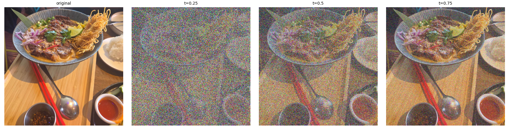
As t increases, the noise contribution decreases. At t = 0, the output is entirely noise, while at t = 1, the output is the original clean image.
Part A · 1.2
Classical Denoising with Gaussian Blur
Before training a model, we can first apply Gaussian blur to the noisy images to see how well a simple image processing method can reduce noise.
Since xt contains t x1, the noisy image is first divided by t and then blurred:
t = 0.25
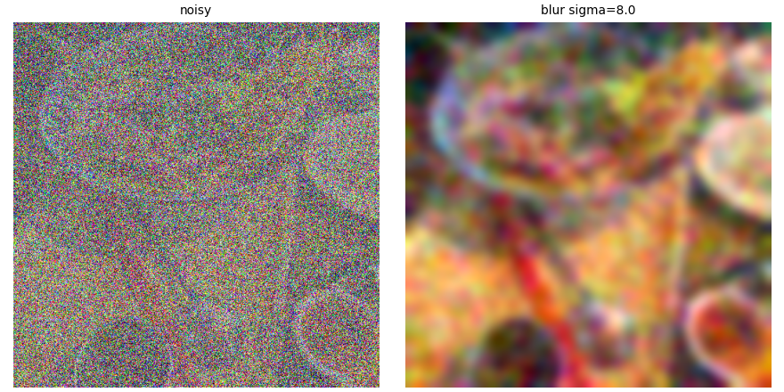
t = 0.50
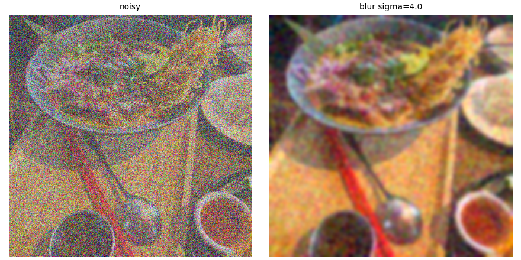
t = 0.75
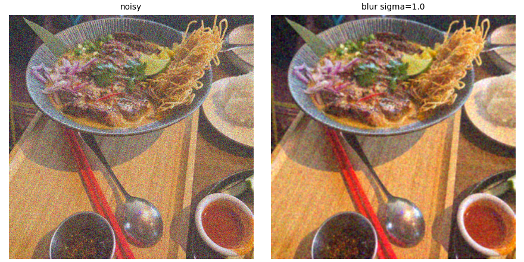
Part A · 1.3
One-Step Denoising with the Pretrained Model
Here, we are using a pretrained flow model to denoise. With the prompt "a high quality photo", the clean image is estimated from a single velocity prediction:
t = 0.25
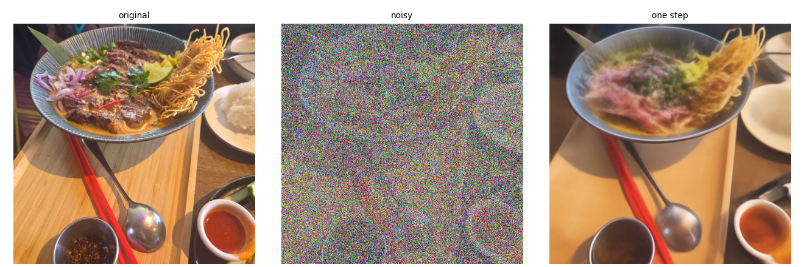
t = 0.50
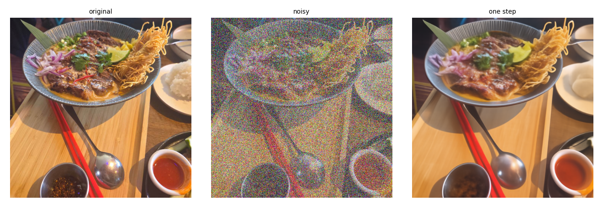
t = 0.75
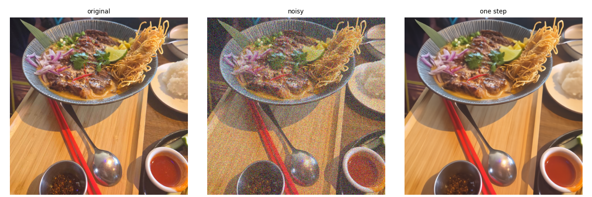
We can see that even with just one denoising step, the pretrained flow model produces significantly better results than Gaussian blur.
Part A · 1.4
Visualizing the Velocity-Based Correction
The predicted update (1 − t) vθ is compared against the true update x1 − xt. The error map is the per-pixel RMS error over RGB:
Updates are displayed on a shared symmetric scale with middle gray as zero, and the error maps share the same linear color limits at every time.
Original
Noisy · Predicted Update · True Update · Error
t = 0.25
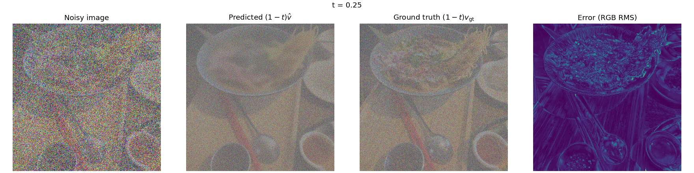
t = 0.50
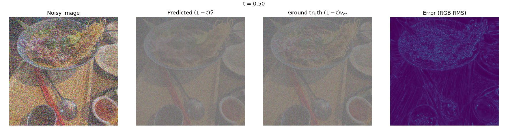
t = 0.75
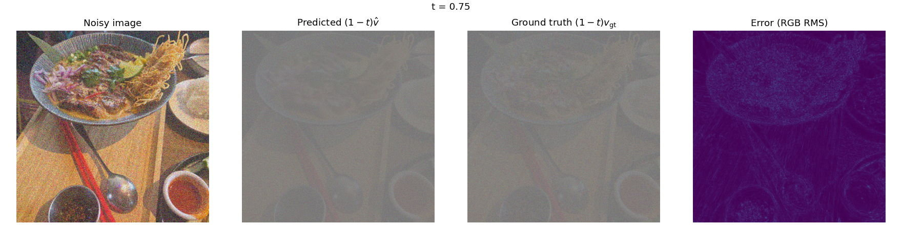
We can observe that the error is most noticeable around edges and fine textures, where details are harder to reconstruct, while smooth regions generally have less error. As t increases toward 1, the overall error decreases, and the reconstructed image becomes closer to the original.
Part A · 1.5
Repeated Denoising with Euler Sampling
euler_sample(x_start, t_start, step_size, velocity) re-evaluates the velocity at the current image and time each step, and shortens the final step so it ends exactly at t = 1. Starting from the t = 0.50 image from 1.1 with h = 0.02 gives 25 updates.
Sampling Trajectory
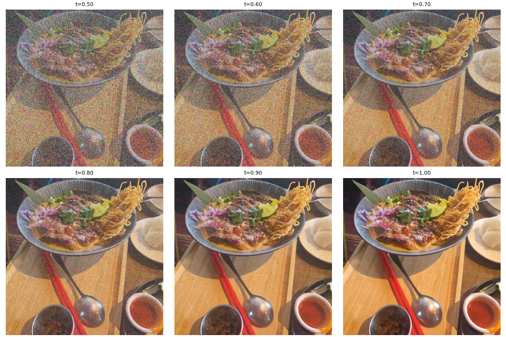
Comparison
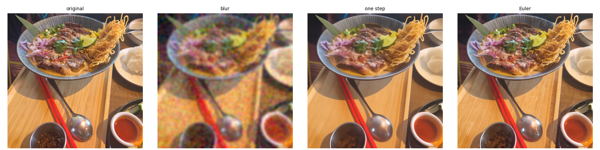
| Method (t = 0.50) | Reconstruction MSE |
|---|---|
| Gaussian blur (1.2) | 0.0280 |
| One-step denoising (1.3) | 0.0107 |
| Euler sampling, 25 steps (1.5) | 0.0131 |
Comparing the three methods, Gaussian blur produces the blurriest results and loses many fine details. One-step denoising gives much clearer images, while Euler sampling produces sharper edges and more detailed textures.
Although Euler sampling has a slightly higher MSE than one-step denoising, MSE measures pixel-wise differences rather than perceptual quality. Euler sampling may produce visually sharper details that differ slightly from the original image, resulting in a higher MSE.
Part A · 1.6
Generating New Images from Pure Noise
Starting from Gaussian noise at t = 0 and integrating to t = 1 with the prompt "a high quality photo".


Part A · 2.1
Classifier-Free Guidance
The model is evaluated once with the prompt (vc) and once with an empty prompt (vu), then combined:
The same starting noise tensors as in 1.6 are used. Setting w = 0 reproduces the conditional prediction (check passed).
CFG Samples (w = 7)


Without CFG (from 1.6), Same Noise
The guided images are noticeably better than the unguided images. They appear clearer, more detailed, and more closely aligned with the text prompts.
Part A · 3.1
Image-to-Image Editing
Following SDEdit, an image is interpolated with noise at a starting time t and then sampled to t = 1 with CFG (w = 7) and the prompt "a high quality photo". Smaller t gives the model more freedom; larger t keeps more of the input. Starting times: 0.02, 0.04, 0.06, 0.10, 0.14, 0.25, 0.50.
Campanile

My Own Image 1 — Thai Food
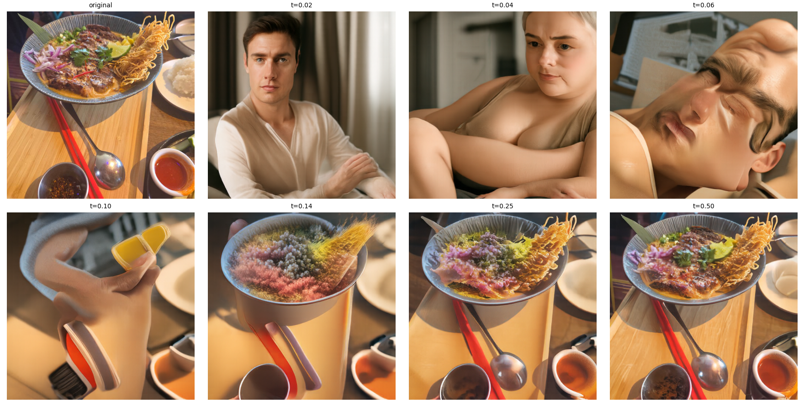
My Own Image 2 — Anime Character
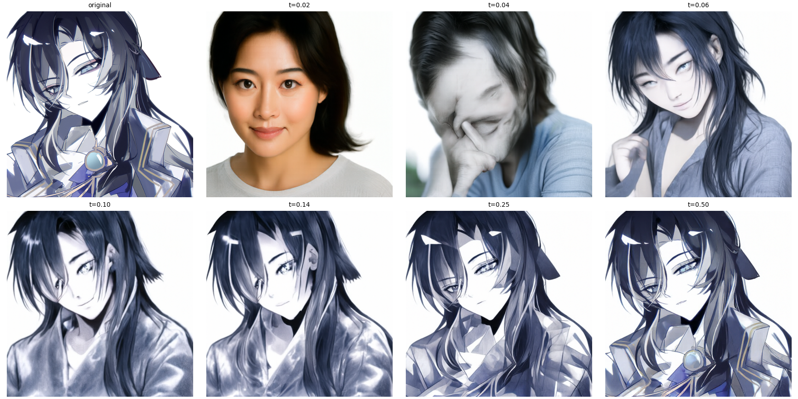
Web Image
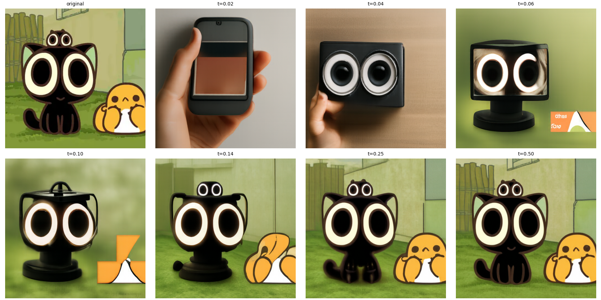
Hand-Drawn Image 1
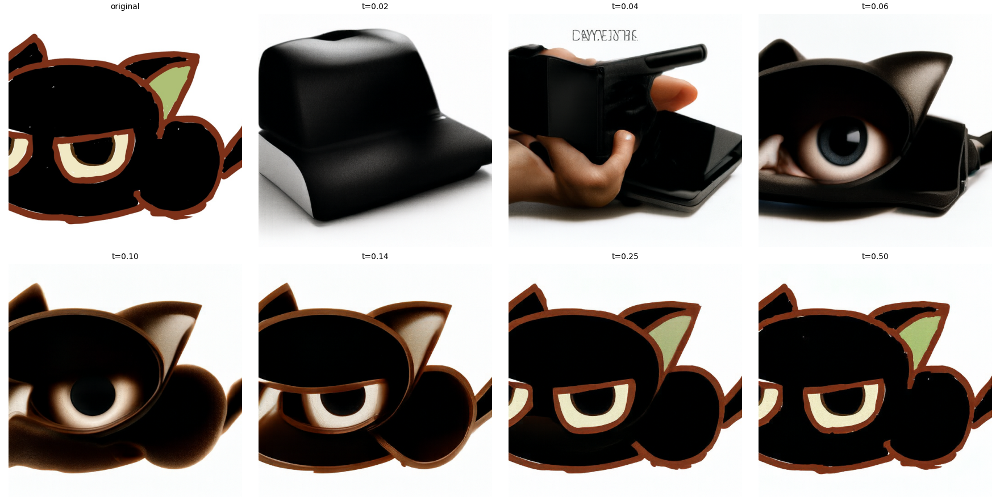
Hand-Drawn Image 2
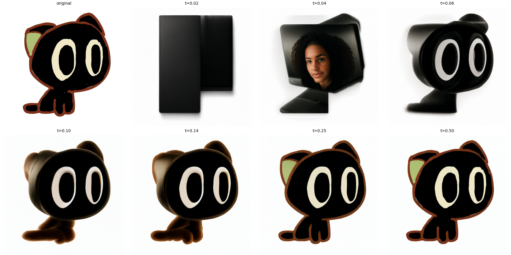
We can see that at lower starting times, the generated images are often completely different from the originals. As the starting time increases, the outputs become more similar to the original images, preserving more of their structure and details.
Part A · 3.2
Text-Guided Image Editing
The same editing procedure, but with a descriptive prompt for the change I want the model to make.
Campanile
Prompt: "a photograph of a rocket on a launch pad"

My Own Image 1 — Thai Food
Prompt: "A bowl of yarn"
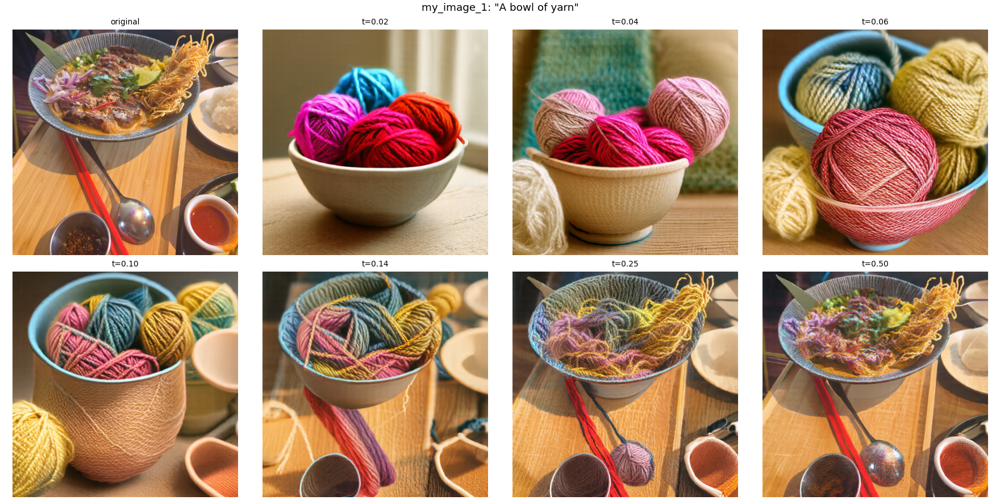
My Own Image 2 — Anime Character
Prompt: "dude with long blue hair"
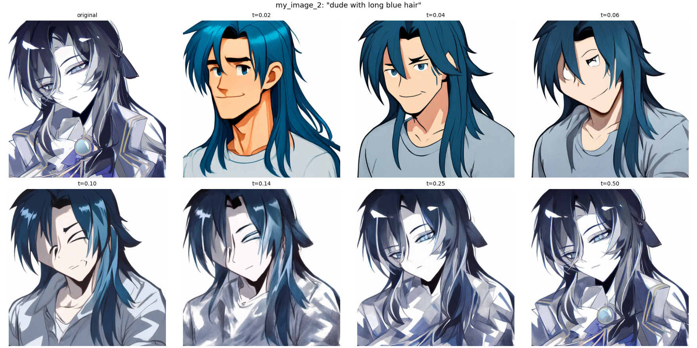
As t increases, the generated image becomes more faithful to the original input, preserving more of its structure and details, but the influence of the text prompt becomes weaker.
Part A · 3.3
Visual Anagrams
At every Euler step, two CFG velocities are averaged: one for prompt 1 on the upright image, and one for prompt 2 on the image rotated 180° (then rotated back).
Anagram 1 — Tea Pot / Tea Boat
Anagram 2 — Cloth Hanger / Umbrella
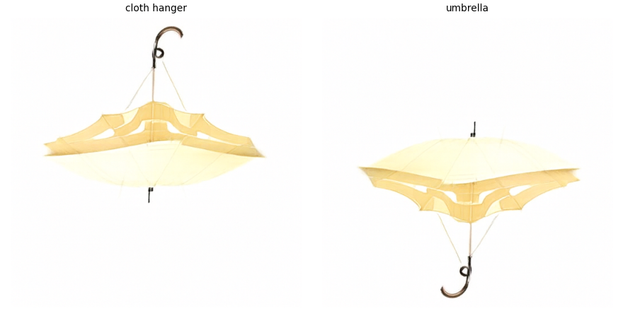
Part A · 3.4
Hybrid Images
Two CFG velocities are combined by frequency: the low frequencies of prompt 1 and the high frequencies of prompt 2, using a Gaussian blur with kernel size 265 and σ = 16.
Hybrid 1 — Waterfall / Bouquet of Flowers
Low-frequency (distant) prompt: "a bouquet of flowers" · High-frequency (close) prompt: "a waterfall"
Hybrid 2 — Mountains / European Castle
Low-frequency (distant) prompt: "European castle" · High-frequency (close) prompt: "mountains"
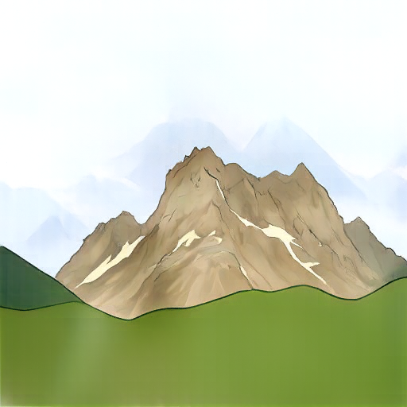
Part B · 1.1
Implementing the UNet
I implemented a UNet using convolutional blocks, downsampling and upsampling layers, and skip connections. Each convolutional layer uses a 3×3 kernel, followed by BatchNorm and GELU activation. Downsampling uses stride-2 convolutions to reduce the image size from 28×28 to 14×14 and then 7×7, while upsampling uses transposed convolutions to restore the original dimensions. At the bottleneck, average pooling reduces the features to 1×1 before unflattening them back to 7×7. Skip connections concatenate features from the downsampling and upsampling paths to preserve spatial information.
I used D = 128 hidden channels for denoising in Part 1 and D = 64 for flow matching in Part 2. The final convolution maps the features back to a single-channel 28×28 grayscale image.
Part B · 1.2
Using the UNet to Train a Denoiser
A clean MNIST digit x ∈ [0, 1] is corrupted with additive Gaussian noise:
Noising Process
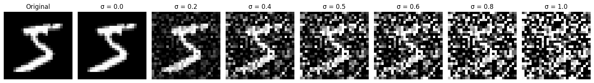
As σ increases, more Gaussian noise is added to the image, making the digit harder to recognize.
Part B · 1.2.1
Training the Single-Step Denoiser
The UNet is trained to map z (σ = 0.5) to the clean digit x with an MSE loss. Fresh noise is sampled for every batch.
| Hyperparameter | Value |
|---|---|
| Batch size | 256 |
| Hidden channels D | 128 |
| Epochs | 5 |
| Optimizer | Adam, learning rate 1e-4 |
| Loss | MSE(Dθ(z), x) |
Training Loss
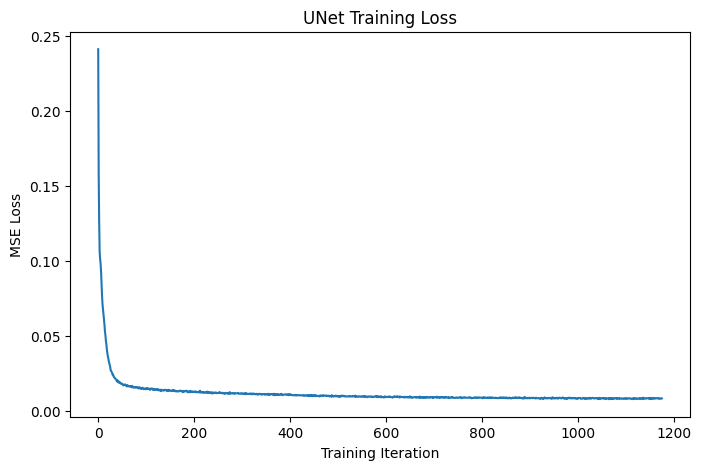
Denoising Results on the Test Set (σ = 0.5)
After epoch 1
After epoch 5
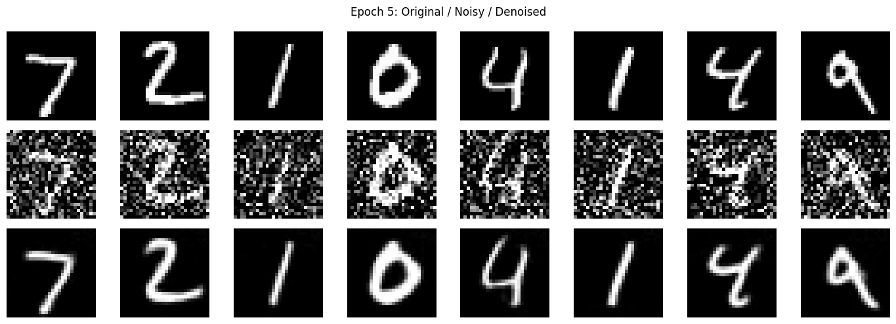
At epoch 1, the denoised digits are still somewhat blurry and contain noticeable noise. By epoch 5, the digits become clearer, with more recognizable shapes and less noise. The training loss decreases significantly at first and then more gradually.
Part B · 1.2.2
Out-of-Distribution Testing
The denoiser trained only on σ = 0.5 is applied to the same test digit at other noise levels.
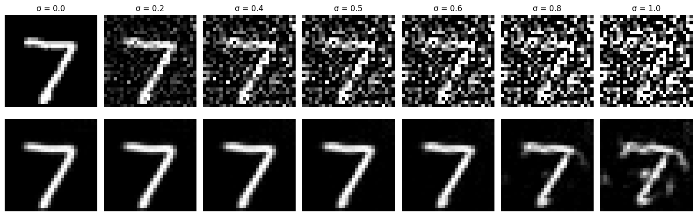
The denoiser performs well at noise levels lower than its training level of σ = 0.5 and remains effective up to around σ = 0.6. As σ increases further, the denoised images become blurrier and less accurate, although the digits are still recognizable.
Part B · 1.2.3
Denoising Pure Noise
The same UNet setup is trained for 5 epochs, but the input is pure Gaussian noise ε ~ N(0, I) while the target is still a clean MNIST digit.
Training Loss
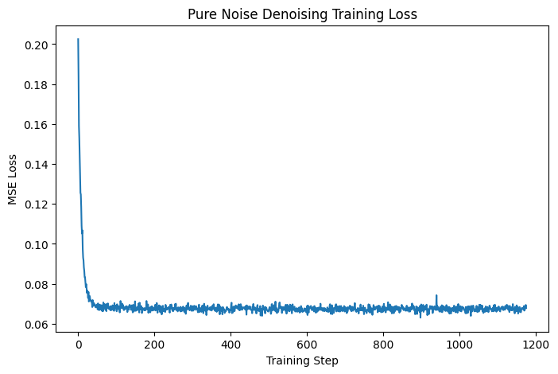
Generated Outputs
After epoch 1

After epoch 5
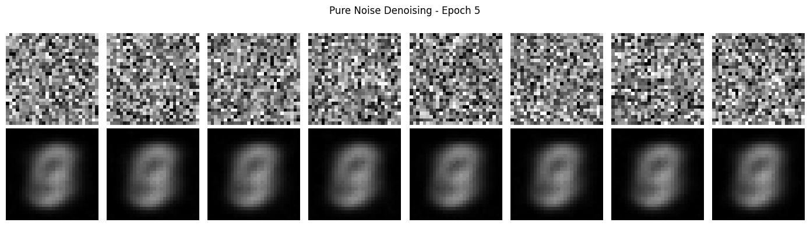
The outputs appear blurry and contain faint patterns resembling overlapping MNIST digits, rather than clearly recognizable numbers. This happens because the input is pure random noise and contains no information about the target digit. Since the model is trained using MSE loss, it learns to predict the average of the training images to minimize the expected error.
Part B · 2.1
Adding Time Conditioning to the UNet
Flow matching trains the UNet to predict the velocity along the straight path between noise and data:
The scalar t ∈ [0, 1] is embedded by two FCBlocks, and the decoder features are scaled by them after Unflatten and after the first UpBlock.
I implemented FCBlock using two fully connected linear layers with a GELU activation between them. To add time conditioning, I first reshape the timestep t into (N, 1) and pass it through two FCBlocks to generate time embeddings with 2D and D features. I then reshape these embeddings to allow broadcasting and multiply them element-wise with the UNet features after Unflatten and the first UpBlock. This allows the network to adjust its features based on the current timestep and predict the corresponding velocity.
Part B · 2.2
Training the Time-Conditioned UNet
| Hyperparameter | Value |
|---|---|
| Batch size | 64 |
| Hidden channels D | 64 |
| Epochs | 10 |
| Optimizer | Adam, initial learning rate 1e-2 |
| Scheduler | ExponentialLR, γ = 0.11/10, stepped each epoch |
Training Loss
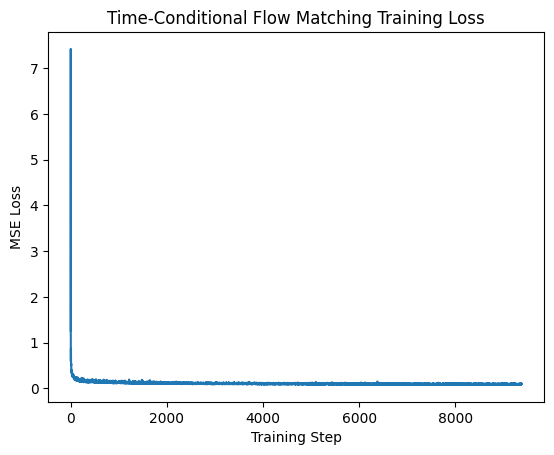
Part B · 2.3
Sampling from the Time-Conditioned UNet
Starting from x0 ~ N(0, I), the image is updated with Euler steps x ← x + dt · uθ(x, t) until t = 1.
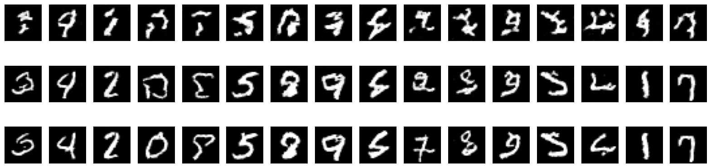
At epoch 1, the generated digits are quite distorted, and many are difficult to recognize. By epoch 5, the digits become clearer and their shapes are more recognizable. At epoch 10, the results improve slightly further, with more consistent digit structures.
Part B · 2.4
Adding Class Conditioning to the UNet
The digit class is passed as a one-hot vector through two additional FCBlocks. The class embedding modulates features multiplicatively and the time embedding additively:
With probability puncond = 0.1 the class vector is zeroed out during training, so the same network also learns an unconditional velocity for classifier-free guidance.
I implemented class conditioning by converting the digit labels (0–9) into one-hot vectors and passing them through two additional FCBlocks. The resulting class embeddings multiply the UNet features, while the time embeddings are added. This allows the model to predict velocities based on both the digit class and timestep. During training, I implemented class dropout using a random mask with a 10% probability of setting the class vector to zero.
Part B · 2.5
Training the Class-Conditioned UNet
| Hyperparameter | Value |
|---|---|
| Batch size | 64 |
| Hidden channels D | 64 |
| Epochs | 10 |
| Optimizer | Adam, initial learning rate 1e-2 |
| Scheduler | ExponentialLR, γ = 0.11/10, stepped each epoch |
| Class dropout puncond | 0.1 |
Training Loss
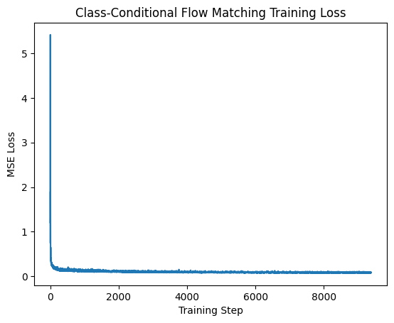
Part B · 2.6
Sampling from the Class-Conditioned UNet
At each Euler step, the UNet is evaluated with and without the class label, and the velocities are combined with classifier-free guidance:
300 Euler steps are used, with 4 samples per digit and the same random seed across checkpoints.
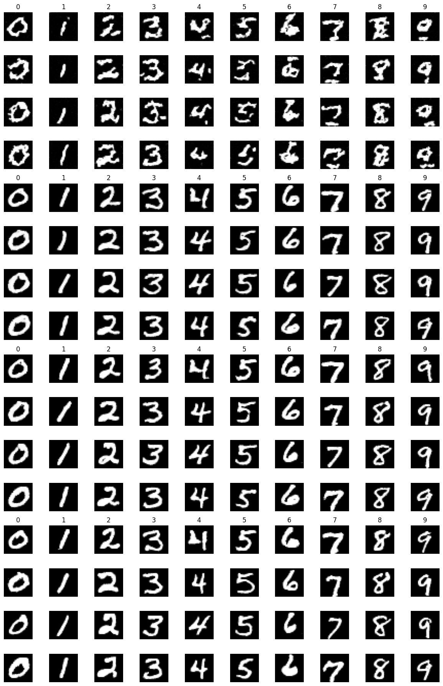
At epoch 1, most digits are recognizable, but some are distorted, incomplete, or noisy. By epoch 5, the digits become much clearer and more consistent. At epoch 10, the results improve slightly further, although the difference from epoch 5 is relatively small.
Removing the Learning Rate Scheduler
For the no-scheduler experiment, I used a constant learning rate of 1e-2, keeping the other hyperparameters the same and training a fresh model for 10 epochs. The generated images are still clear and recognizable, with quality comparable to the model trained with exponential learning rate decay. This suggests that removing the scheduler did not significantly affect the final image quality in this experiment.